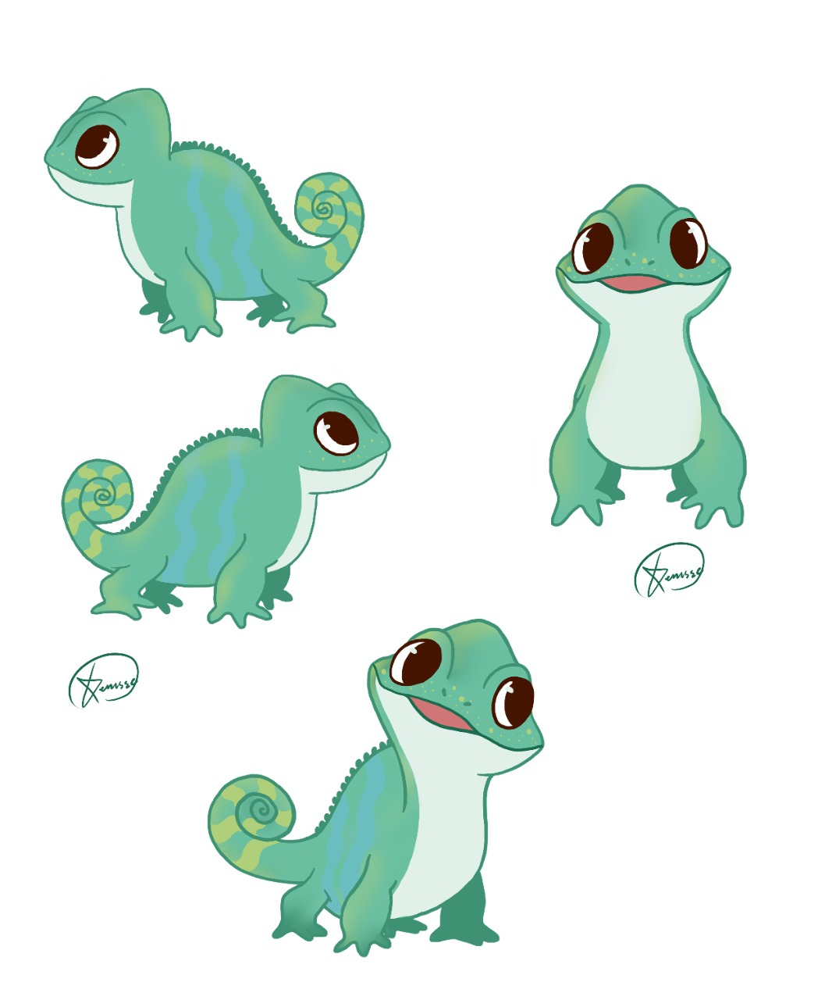

PROYECTO: MASCOTA DE LA CASA DE DISEÑO, COVAO
Este proyecto surgió como una idea de identidad interna en la especialidad de diseño gráfico, en donde se escogió la mascota ya designada (el camaleón) y se diseñó con personalidad, moldeandolo en el programa BLENDER 3D y animándolo en el mismo, creando diversas dinámicas, como filtros de instagram para móviles y demás.
IR A FILTRO
(Boceto por Denisse Calvo)
PRONTO, MÁS PROYECTOS
Contacta por redes